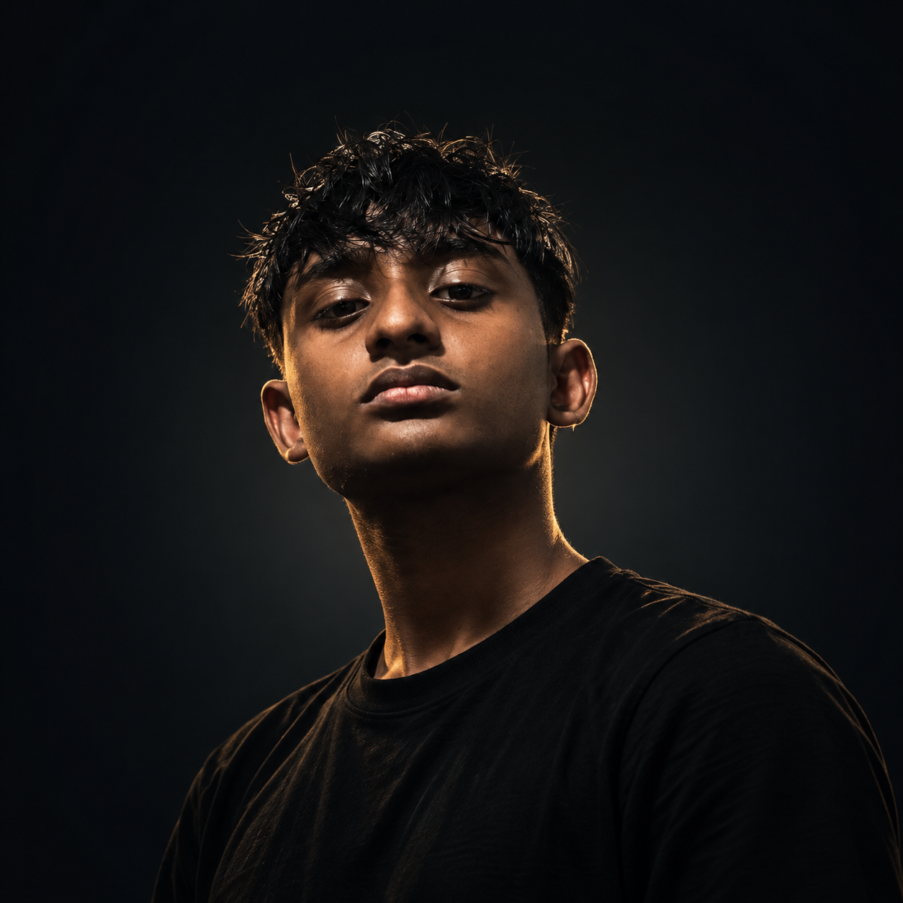

I.01
Guththilayaneni
Music video — edit & colour grade.

A creative technologist moving between the edit suite, the LED wall and the browser — and designing for whatever screen the idea lands on.
00 — Prologue
I started in 2022 as an editor, cutting music videos and event films frame by frame. Then the frames got bigger — stages, LED walls, whole 3D worlds. Then they became something you could touch: websites, and a real-time VJ engine I built myself. Different screens, same question every time: how should this feel when it reaches people?
Chapter One · 2022 —
It started in the timeline. As main editor at Binaru Productions I learned pacing, colour and restraint on music videos and event coverage — where a single frame too long can lose the room.
Music video — edit & colour grade.
Cinematic storytelling.
Compositing & motion design.
“Editing taught me that design is mostly timing.”
Chapter Two · 2025 —
At Fern (Events) the canvas became a room. I design stages and visualise them in Unreal Engine 5 so clients can walk the room before it exists, design motion for LED walls, then run those screens live on the night.
A temple world built and rendered in Unreal Engine 5 for the school's Science Day, designed to play on the stage screen.
Stage design & previz
Stages I designed, then rendered as previz films for client sign-off and for posting.
Stage design & previz — Unreal Engine 5.
Event stage previz — Unreal Engine 5.
Show reel — stage previz in Unreal Engine 5.
Motion graphics & live visuals
VFX & motion graphics for the band's opening.
Motion graphics showreel — reveals and LED loops.
An immersive 3D experience for the event.
My own node-based real-time visuals tool, built for live shows. This canvas is a small sketch of how it thinks.
Chapter Three · 2022 —
Running alongside it all: the web. It began with Richmond Live and now it's my full-time work at Goodstuff, where I design and build the studio's site and tools. Each one below is live — pick one and explore it.
Chapter Four · 2025 —
The smallest screen is the hardest. At Realtalk Media I edit for brands like Goya, Gold, Kumarika and ITN — stories that have about a second and a half to earn the next swipe.
Chapter Five · Now
| Basic social editClean TikTok / Reel, transitions & subtitles | LKR 3,500 / project |
|---|---|
| Premium storytellingMotion graphics & sound design | LKR 10,000 / project |
| Web developmentResponsive landing pages & portfolios | LKR 25,000 / from |
| 3D static visualProduct or environment render | LKR 30,000 / image |
| 3D video / renderEnvironments, event previz, product animation | LKR 35,000 / project |
| Something elseLong-form, branding, bespoke | Let's talk |
To be continued